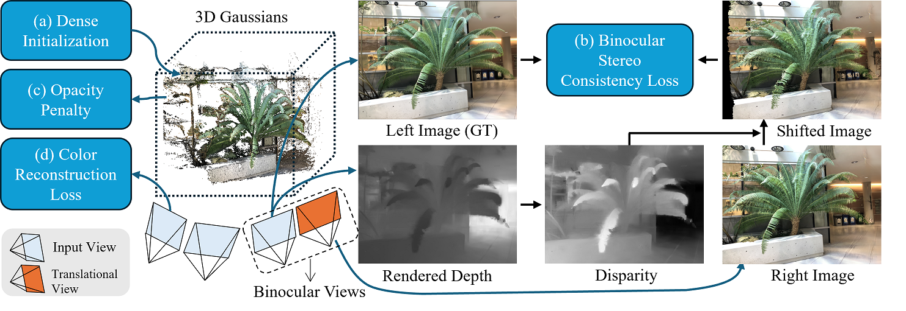

<h1 align="center">Binocular-Guided 3D Gaussian Splatting with ViewConsistency for Sparse View Synthesis </h1>

<p align="center">
    <strong>Liang Han</strong>
    ·
    <a href="https://junshengzhou.github.io/"><strong>Junshen Zhou</strong></a>
    ·
    <a href="https://yushen-liu.github.io/"><strong>Yu-Shen Liu</strong></a>
    ·
    <a href="https://h312h.github.io/"><strong>Zhizhong Han</strong></a>
</p>
<h2 align="center">NeurIPS 2024</h2>
<h3 align="center"><a href="#">Paper</a> | <a href="https://github.com/hanl2010/Binocular3DGS">Project Page</a></h3>
<div align="center"></div>
<p align="center">
    
</p>
